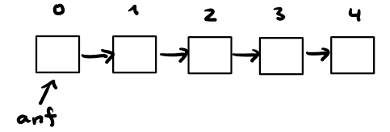
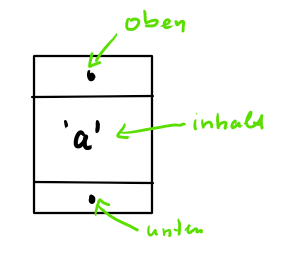
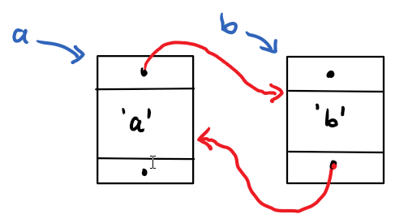

Quiz: ADT Liste
Wir bezeichnen die Einträge der Liste mit Indizes nach dem folgenden Muster:
Aufgabe 1
a = Liste()
a.insert(1)
a.insert(2)
a.reset()
a.advance()
a.insert(3)
a.advance()
a.delete()
a.insert(4)
a.reset()
a.insert(6)Welche Zahlenfolge findet sich in den Listenlementen (mit blank getrennt, ohne das Dummy-Element am Anfang)?
Gib den Index des Elements an, auf das der Zeiger pos zeigt.
Aufgabe 2
a = Liste()
a.insert(3)
a.advance()
a.insert(2)
a.insert(5)
a.insert(3)
a.reset()
a.advance()
a.delete()
a.insert(4)
a.advance()Welche Zahlenfolge findet sich in den Listenlementen (mit blank getrennt, ohne das Dummy-Element am Anfang)?
Gib den Index des Elements an, auf das der Zeiger pos zeigt.
Die Klasse Verweisboxhat einen Inhalt und zwei Zeiger unten und oben.
class VerweisBox:
def __init__(self, inhalt, unten=None, oben=None):
self.inhalt = inhalt
self.unten = unten
self.oben = oben
if unten is not None: self.unten.oben = self
if oben is not None: self.oben.unten = self
def __str__(self):
return self.inhaltDem Konstruktor werden Inhalt und optional weitere Verweisboxen für unten und oben übergeben. Beispiele:
a = VerweisBox('a')ergibt:
a = Verweisbox('a')
b = Verweisbox('b',a)
ergibt:
Aufgabe 3
a = VerweisBox('a')
b = VerweisBox('b')
c = VerweisBox('c',a,b)
d = VerweisBox('d',b,c)
print(a.unten)
print(b.unten.oben)
print(b.oben.oben.oben)
print(c.unten)
print(c.oben.oben.unten.unten.unten)Was erscheint auf der Konsole? (Ausgaben mit Leerzeichen trennen)
Aufgabe 4
a = VerweisBox('a')
d = VerweisBox('d',a)
e = VerweisBox('e',d,a)
print(a.unten.unten.oben)
print(d.oben.unten)
print(e.oben.unten.unten.oben)Was erscheint auf der Konsole? (Ausgaben mit Leerzeichen trennen)
Aufgabe 5
a = Liste()
k = Keller()
s = Schlange()
for i in range(5):
s.enq(i)
k.push(5+i)
for i in range(5):
a.insert(k.top())
a.insert(s.front())
k.pop()
s.deq()Welche Zahlenfolge findet sich in den Listenlementen (mit blank getrennt, ohne das Dummy-Element am Anfang)?
Aufgabe 6
a = []
for i in range(5):
a.append(i)
print(a.pop(), end=' ')
print(a.pop(), end=' ')
for i in range(6,9):
a.append(i)
while a:
print(a.pop(), end=' ')Welche Datenstruktur wird hier verwendet?
Was erscheint auf der Konsole? (Zahlenfolge mit Leerzeichen getrennt)
Aufgabe 7
from collections import deque
a = deque([])
for i in range(5):
a.append(i)
print(a.popleft(), end = ' ')
print(a.popleft(), end = ' ')
for i in range(6,9):
a.append(i)
while a:
print(a.popleft(), end = ' ')Welche Datenstruktur wird hier verwendet?
Was erscheint auf der Konsole? (Zahlenfolge mit Leerzeichen getrennt)